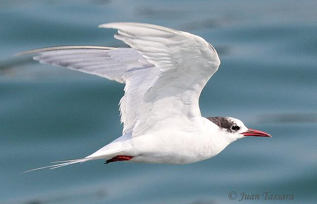

La fauna de la isla


- 
En las islas y en particular en Isla Pingüino, además de los pingüinos patagónicos que allí nidifican, es posible ver calamares, la gaviota austral y leones marinos. Aquí se encuentra la colonia reproductiva más próxima al continente del pingüino penacho amarillo. En definitiva, la Isla Pingüino no solo es un refugio para especies emblemáticas como el pingüino de penacho amarillo y el lobo marino, sino también un ecosistema interconectado donde la fauna terrestre y marina conviven en un delicado equilibrio. Para los amantes de la naturaleza y la fauna silvestre, este rincón del Atlántico Sur ofrece una oportunidad única para observar la vida silvestre en su estado más puro, mientras que su estatus de área protegida asegura que las generaciones futuras también puedan disfrutar de este paraíso natural. .